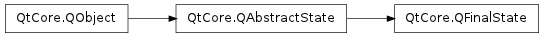

QFinalState ¶

Note
This class was introduced in Qt 4.6
Detailed Description ¶
The PySide.QtCore.QFinalState class provides a final state.
A final state is used to communicate that (part of) a PySide.QtCore.QStateMachine has finished its work. When a final top-level state is entered, the state machine’s PySide.QtCore.QStateMachine.finished() () signal is emitted. In general, when a final substate (a child of a PySide.QtCore.QState ) is entered, the parent state’s PySide.QtCore.QState.finished() () signal is emitted. PySide.QtCore.QFinalState is part of The State Machine Framework .
To use a final state, you create a PySide.QtCore.QFinalState object and add a transition to it from another state. Example:
QPushButton button; QStateMachine machine; QState *s1 = new QState(); QFinalState *s2 = new QFinalState(); s1->addTransition(&button, SIGNAL(clicked()), s2); machine.addState(s1); machine.addState(s2); QObject::connect(&machine, SIGNAL(finished()), QApplication::instance(), SLOT(quit())); machine.setInitialState(s1); machine.start();See also
QStateMachine.finished() QState.finished()
- class PySide.QtCore. QFinalState ( [ parent=None ] ) ¶
-
Parameters: parent – PySide.QtCore.QState Constructs a new PySide.QtCore.QFinalState object with the given parent state.